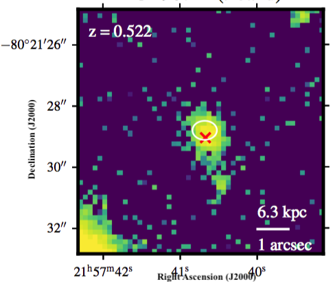

About the project
Motivation
The goal of this database is to provide an up-to-date overview of all currently identified host galaxies of accurately-localized fast radio bursts (FRBs).
It is hosted by the Fast and Fortunate for FRB Follow-up (F^4) team
and serves as a front-end interface for the host galaxy data and measurements delivered by our official GitHub repository:
https://github.com/FRBs/FRB
GitHub
This database is intended for new users who wish to review the current status of galaxies associated with FRBs and to provide a simple and easy way
to extract the basic host galaxy properties of all the to-date known FRB hosts.
Acknowledge us
To acknowledge the use of this database, please:
- Cite the original paper(s) providing the data or measurements presented here. References can be found under each individual FRB entry.
- Cite the main FRB host galaxy paper where this webpage was first introduced (Heintz et al., in prep.).
- Add a footnote to FRB host galaxy database URL (frbs.github.io/FRBhostpage) -- TBD
Suggestions
We appreciate any comments or suggestions to the contents of the webpage.
We also encourage the community to send information on any new host galaxy detections or complementary data of hosts already presented here.
Any comments should be sent to Kasper E. Heintz at keh14@hi.is.
FRB host database
This database contains information about the FRB and galaxy properties of the 9 currently known host galaxies associated with accurately-localized FRBs.
The most recent version of the database is available in CSV format here.
| FRB |
RA (deg) |
Dec (deg) |
Detected by |
DM (pc/cm3)
| Redshift |
Repeating |
| 190711 |
329.41950 |
-80.35800 |
ASKAP |
593.1 |
0.5220 |
Yes |
| 190611 |
320.74546 |
-79.39758 |
ASKAP |
321.4 |
0.3778 |
No |
| 190608 |
334.01975 |
-7.89822 |
ASKAP |
338.7 |
0.11778 |
No |
| 190523 |
207.06500 |
72.46972 |
DSA-10 |
760.8 |
0.660 |
No |
| 190102 |
322.41567 |
-79.47569 |
ASKAP |
364.5 |
0.2913 |
No |
| 181112 |
327.34858 |
-52.97091 |
ASKAP |
589.0 |
0.4755 |
No |
| 180924 |
326.10521 |
-40.90023 |
ASKAP |
362.4 |
0.3212 |
No |
| 180916 |
29.50333 |
65.71675 |
CHIME |
348.76 |
0.0337 |
Yes |
| 121102 |
82.99451 |
33.14799 |
Arecibo |
557 |
0.1927 |
Yes |
FRB 190711

Image from Macquart et al., 2020, Nature, 581, 391
Summary
- Detected by: ASKAP-ICS
- Coordinates (RA, Dec): 21:57:40.68 -80:21:28.8 (J2000)
- Redshift: 0.5220
- Observed DM: 593.1 pc cm-3
- Repeating: Yes
- References: 2020Natur.581..391M;
2020arXiv200513162D
FRB 190611

Image from Macquart et al., 2020, Nature, 581, 391
Summary
- Detected by: ASKAP-ICS
- Coordinates (RA, Dec): 21:22:58.91 -79:23:51.3 (J2000)
- Redshift: 0.3778
- Observed DM: 321.4 pc cm-3
- Repeating: No
- References: 2020Natur.581..391M;
2020arXiv200513162D
FRB 190608

Image from Chittidi et al., 2020 (arXiv: 2005.13158)
Summary
- Detected by: ASKAP-ICS
- Coordinates (RA, Dec): 22:16:04.74 -07:53:53.6 (J2000)
- Redshift: 0.11778
- Observed DM: 339.5 pc cm-3
- Repeating: No
- References: 2020Natur.581..391M;
2020ApJ...895L..37B;
2020arXiv200513158C;
2020arXiv200513157S;
2020arXiv200513162D
FRB 190523

Image from Ravi et al., 2019, Nature, 572, 352. The image is centered on coordinates (J2000) RA 13:48:15.6, DEC +72:28:11.
Summary
- Detected by: DSA-10
- Coordinates (RA, Dec): 13:48:15.6 +72:28:11 (J2000)
- Redshift: 0.660
- Observed DM: 760.8 pc cm-3
- Repeating: No
- References: 2019Natur.572..352R
FRB 190102

Image from Bhandari et al., 2020, ApJL, 895, 37
Summary
- Detected by: ASKAP-ICS
- Coordinates (RA, Dec): 21:29:39.76 -79:28:32.5 (J2000)
- Redshift: 0.2913
- Observed DM: 364.5 pc cm-3
- Repeating: No
- References: 2020Natur.581..391M;
2020ApJ...895L..37B;
2020arXiv200513162D
FRB 181112

Image from Prochaska et al., 2019, Science, 366, 231
Summary
- Detected by: ASKAP-ICS
- Coordinates (RA, Dec): 21:49:23.63 −52:58:15.35 (J2000)
- Redshift: 0.4755
- Observed DM: 589.27 pc cm-3
- Repeating: No
- References: 2019Sci...366..231P;
2020ApJ...895L..37B
FRB 180924

Image from Bannister et al., 2019, Science, 365, 565
Summary
- Detected by: ASKAP-ICS
- Coordinates (RA, Dec): 21:44:25.255 −40:54:00.1 (J2000)
- Redshift: 0.3214
- Observed DM: 361.42 pc cm-3
- Repeating: No
- References: 2019Sci...365..565B;
2020ApJ...895L..37B;
2020arXiv200513162D
FRB 180916

Image from Marcote et al., 2020, Nature, 577, 190
Summary
- Detected by: CHIME
- Coordinates (RA, Dec): 01:58:00.75 +65:43:00.32 (J2000)
- Redshift: 0.0337
- Observed DM: 348.76 pc cm-3
- Repeating: Yes
- References: 2020Natur.577..190M;
2020arXiv200110275T
Host galaxy properties
| Quantity |
Measured value |
Unit |
| Stellar mass |
~1010 |
M⊙ |
| Star formation rate |
> 0.016 |
M⊙/yr |
| Metallicity |
TBD |
12+log(O/H) |
| E(B-V) |
TBD |
mag |
| Absolute r-band mag. |
-19.42 ± 0.05 |
mag |
| u - r color (rest-frame) |
TBD |
mag |
| Half-light radius |
3.57 ± 0.36 |
kpc |
| FRB offset from galaxy center |
~4.7 |
kpc |
Compare this FRB to other FRB hosts and field galaxies in a SFR-Mstar plot (add href) or in a BPT diagram (add href).
FRB 121102

Image from Chatterjee et al., 2017, Nature, 541, 58
Summary
- Detected by: Arecibo
- Coordinates (RA, Dec): 05:31:58.68 +33:08:52.76 (J2000)
- Redshift: 0.1927
- Observed DM: 557 ± 2 pc cm-3
- Repeating: Yes
- References: 2016Natur.531..202S;
2017Natur.541...58C;
2017ApJ...834L...7T;
2017ApJ...843L...8B
Host galaxy properties
| Quantity |
Measured value |
Unit |
| Stellar mass |
(5.5 ± 1.5) × 107 |
M⊙ |
| Star formation rate |
0.23 ± 0.01 |
M⊙/yr |
| Metallicity |
TBD |
12+log(O/H) |
| E(B-V) |
TBD |
mag |
| Absolute r-band mag. |
-17.0 ± 0.2 |
mag |
| u - r color (rest-frame) |
TBD |
mag |
| Half-light radius |
1.4 ± 0.2 |
kpc |
| FRB offset from galaxy center |
0.63 ± 0.23 |
kpc |
Compare this FRB to other FRB hosts and field galaxies in a SFR-Mstar plot (add href) or in a BPT diagram (add href).
FRB properties
| Quantity |
Measured value |
Units |
| DMFRB |
557 ± 2 |
pc cm-3 |
| DMISM |
188 |
pc cm-3 |
| RMFRB |
105 |
rad m-2 |
| Scat. time (at 1 GHz) |
-- |
ms |
| Pulse width |
3.0 ± 0.5 |
ms |
| Fluence |
> 0.1 |
Jy ms |
| Energy |
3.7 × 1029 |
erg Hz-1 |
Emission line fluxes
| Emission line |
Measured value |
| Hα |
2.61 × 0.04 |
| Hβ |
0.96 × 0.09 |
| [OIII] λ 5007 |
4.38 × 0.08 |
| [NII] λ 6584 |
< 0.12 |
Measurements are reported in units of 10-16 erg s-1 cm-2
and are corrected for Galactic dust using the E(B−V) values derived from Schlegel et al., 1998, ApJ, 500, 525.
Photometry
| Telescope |
Filter (eff. wavelength) |
Magnitude (AB) |
| GMOS-N |
g' (475 nm) |
25.85 × 0.12 |
| GMOS-N |
r' (630 nm) |
25.46 × 0.14 |
| GMOS-N |
i' (780 nm) |
24.75 × 0.09 |
| GMOS-N |
z' (925 nm) |
24.30 × 0.13 |
| Spitzer |
3.6 (3.6 μm) |
23.87 × 0.20 |
| Spitzer |
4.5 (4.5 μm) |
> 24.77 |
| HST/WFC3 |
F110W (1.1 μm) |
23.675 × 0.012 |
| HST/WFC3 |
F160W (1.6 μm) |
23.31 × 0.03 |
Measurements are corrected for Galactic dust using the E(B−V) values derived from Schlegel et al., 1998, ApJ, 500, 525.